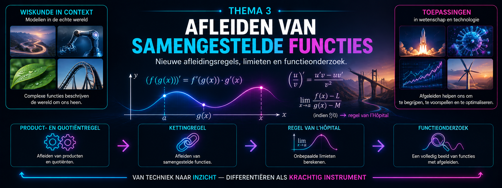

Overzicht van de hoofdstukken
1Verandering en het afgeleid getal 2De afgeleide
functie 3Verloop van functies
Waarom beginnen we met verandering?
In wetenschappen draait veel om verandering. Een grootheid neemt toe of af, een grafiek wordt steiler of vlakker, een temperatuur verandert, een populatie groeit, een trilling herhaalt zich of een systeem bereikt een maximum of minimum.
Om zulke veranderingen wiskundig te beschrijven, gebruiken we functies en afgeleiden.
Je hebt in het vijfde jaar al geleerd hoe veeltermfuncties zich gedragen, hoe je gemiddelde en ogenblikkelijke verandering kunt onderscheiden en hoe een afgeleide informatie geeft over een functie. Je gebruikte de eerste en tweede afgeleide om stijgen en dalen, extrema en buigpunten te onderzoeken.
In dit eerste thema halen we die kennis opnieuw naar boven. Niet om alles opnieuw vanaf nul te leren, maar om de belangrijkste ideeën en technieken opnieuw scherp te stellen. Ze vormen immers de basis voor bijna alles wat later in deze cursus volgt.
We besteden opnieuw aandacht aan:
Deze opfrissing blijft bewust compact. Het doel is dat je het wiskundige gereedschap uit het vijfde jaar opnieuw vlot kunt gebruiken, zodat we daarna kunnen verderbouwen naar nieuwe functieklassen, nieuwe afleidingstechnieken en uiteindelijk integralen.
Analyse begint dus niet met een nieuwe formule. Ze begint met een vertrouwde vraag:
Hoe verandert een functie, en wat kunnen we daaruit afleiden?
Thema1-Opfrissing/Afgeleid-getal Thema1-Opfrissing/Oefeningen-Afgeleid-getal Thema1-Opfrissing/Afgeleide-functie Thema1-Opfrissing/Oefeningen-Afgeleide-functie Thema1-Opfrissing/Verloop-functies Thema1-Opfrissing/Oefeningen-Verloop-functies

Overzicht van de hoofdstukken
1Oppervlakte als som van kleine stukjes 2Van
kleine bijdragen naar integraal 3Primitieve functies van veeltermfuncties
H
oe bepaal je exact de oppervlakte van een gebied met een gekromde grens? En hoe kan dezelfde wiskunde gebruikt worden om allerlei kleine bijdragen samen te voegen tot één totaal?
In dit thema ontwikkelen we stap voor stap het begrip integraal. We vertrekken vanuit oppervlakte, bouwen het idee van een integraal op en ontdekken vervolgens hoe primitieve functies ons toelaten integralen efficiënt te berekenen.
Thema2-Oppervlakken/1-Oppervlakken Thema2-Oppervlakken/1-Oppervlakken-oefeningen Thema2-Oppervlakken/2-Integraal_def Thema2-Oppervlakken/2-Integraal_def-oefeningen Thema2-Oppervlakken/3-Primitieve_functies Thema2-Oppervlakken/3-Primitieve_functies-oefeningen

Overzicht van de hoofdstukken
1Producten en quotiënten afleiden 2De kettingregel
3De regel van l’Hôpital 4Functieonderzoek
Nieuwe afleidingstechnieken
Tot nu toe kon je vooral functies afleiden die uit sommen, verschillen en machten bestaan. Maar wat gebeurt er wanneer functies met elkaar worden vermenigvuldigd, gedeeld of in elkaar worden geschoven?
In dit thema breiden we onze gereedschapskist uit.
Je leert producten en quotiënten afleiden met de product- en quotiëntregel. Met de kettingregel kun je vervolgens samengestelde functies aanpakken. Die technieken maken het mogelijk om ook rationale en irrationale functies systematisch te onderzoeken.
Daarnaast keren we terug naar limieten. Bij bepaalde onbepaalde vormen biedt de regel van l’Hôpital een nieuwe manier om een limiet te berekenen door teller en noemer af te leiden.
In het laatste hoofdstuk komt alles samen. Afgeleiden, limieten, asymptoten, tekenonderzoek en kromming worden gecombineerd tot een volledig functieonderzoek.
Zo verschuift de aandacht geleidelijk van een afgeleide berekenen naar een functie begrijpen.
Thema3-Breuken-Wortels/1-Product-en-quotientregel Thema3-Breuken-Wortels/1-Product-en-quotientregel-oefeningen Thema3-Breuken-Wortels/2-Kettingregel Thema3-Breuken-Wortels/2-Kettingregel-oefeningen Thema3-Breuken-Wortels/3-Hopital Thema3-Breuken-Wortels/3-Hopital-oefeningen Thema3-Breuken-Wortels/4-Functieonderzoek Thema3-Breuken-Wortels/4-Functieonderzoek-oefeningen
Overzicht van de hoofdstukken
Voor dit thema zijn nog geen hoofdstukken
toegevoegd.
Overzicht van de hoofdstukken
Voor dit thema zijn nog geen hoofdstukken
toegevoegd.
Overzicht van de hoofdstukken
Voor dit thema zijn nog geen hoofdstukken
toegevoegd.
Overzicht van de hoofdstukken
Voor dit thema zijn nog geen hoofdstukken
toegevoegd.
Overzicht van de hoofdstukken
Voor dit thema zijn nog geen hoofdstukken
toegevoegd.